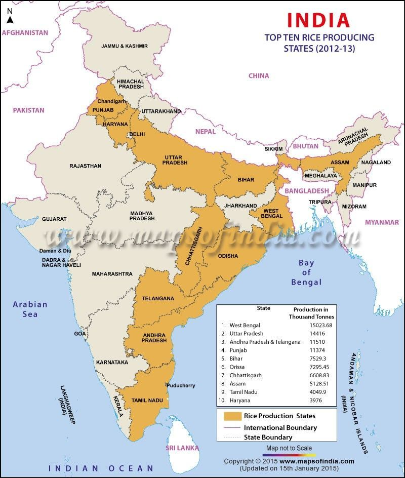

Rice is a tropical crop that can be grown almost throughout the year. It depends on atmospheric moisture and rainfall for irrigation. India is the 2nd largest producer of rice in the world. India has largest area in world under rice cultivation. Productivity is low compared to wheat because Green Revolution primarily boosted wheat production in India. The traditional rice fields are known as paddy fields and require to be flooded with 10-12 cm deep water in the early stages. Type of Crop: Kharif, Rabi Techniques Used: Transplantation technique, Japanese Transplantation technique, new SRI technique Varieties: Aman, Sali, Afghani, Aus, Boro, Palua Temperature: ∼ 24 0C Rainfall: ∼ 150 cm Soil type: Clay/ Loamy Major Producers: West Bengal, Uttar Pradesh, Andhra Pradesh, Punjab, Bihar, Orissa, Chhattisgarh, Assam, Tamil Nadu, Haryana Highest Producer: West Bengal Highest per Hectare Yield: Punjab Research Centres: Cuttack, Odisha Highest Producing Country: China 